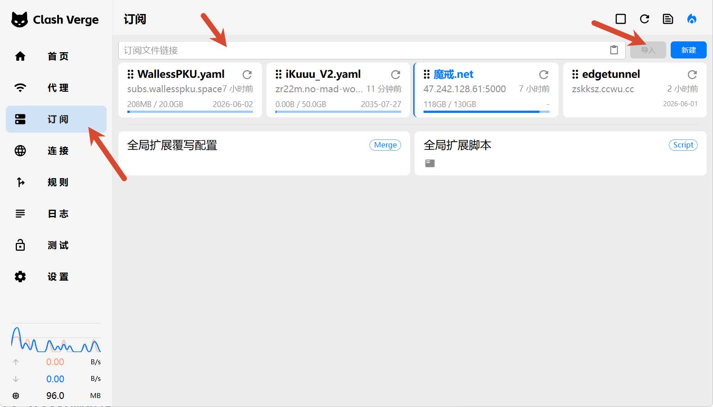
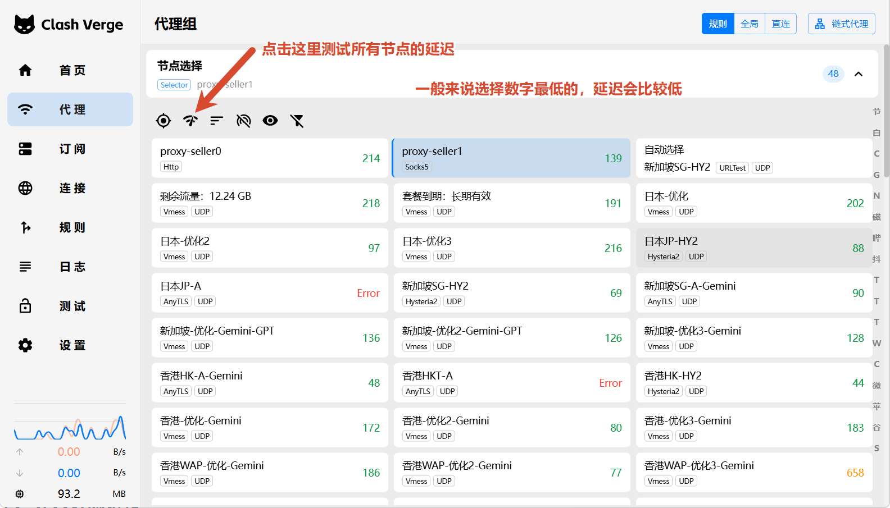
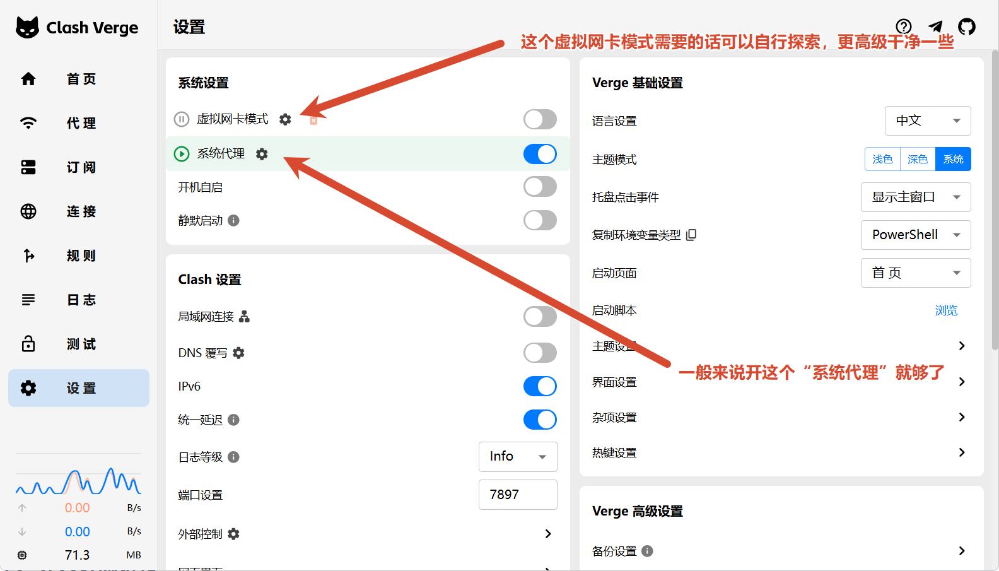

科学访问网络环境
面向科研学习和 AI 工具访问的基础网络配置教程。先准备 Clash Verge，再选择合适的服务，最后导入订阅、选择节点并开启系统代理。
Disclaimer
本页仅用于科研学习、公开资料访问和合法授权资源访问。请遵守所在地法律法规、学校或机构网络政策、数据库订阅规则和平台服务条款。
不要在教程中公开账号、密码、订阅链接、节点信息、API Key 或机构内部访问地址。
更完整的 Clash Verge 使用说明可以参考 Clash Verge 教程文档。
Setup Flow
- 准备工作
- 安装 Clash Verge
-
导入配置

订阅页面：把服务商提供的订阅链接粘贴到输入框，再点击导入。 -
选择节点与模式

代理页面：先测试节点延迟，一般选择延迟数字较低、实际访问稳定的节点。 -
验证连通性

设置页面：一般开启“系统代理”即可；虚拟网卡模式更高级，需要时再自行探索。 - 排查常见问题
Service References
下面是第三方网络服务参考，主要用于科研访问和应急学习环境。价格、流量、签到规则、可用性和服务条款都可能变化，注册和购买前请自行核验，并遵守所在地法律法规和平台规则。